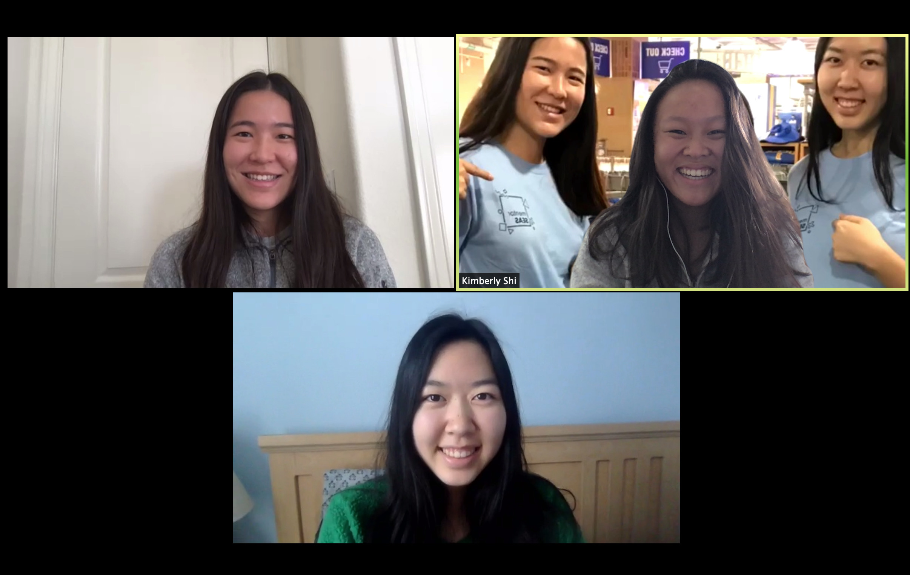

Welcome!
It lacks cats but at least we are trying
meet squegg
The day we got the news that UCLA was cancelling class after a full day of class Week 10. But guess what? We still got major stress from Night in the Diner so we still gotta meet in person despite coronavirus. But little does everyone know that we got a secret weapon, our fourth member Father Flynn.
how people socialize circa 2020 ft zoom
meet squegg